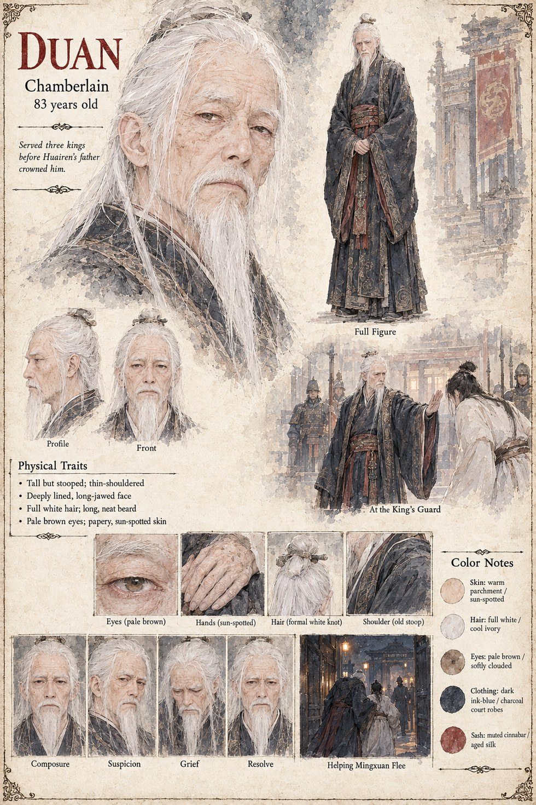

Duan
Chamberlain of the Jinlu Court · 83 years old · served three kings before Huairen
Chamberlain of the Jinlu court, and old enough to have served three kings before a crown ever sat on Huairen's own head. Forty years of never once being questioned by the King's Guard is not an accident; it is the entire instrument he spends on Mingxuan's behalf, walking him past men who would stop anyone else, on the strength of a reputation he has spent decades not spoiling with a single lie.
He uses that same reputation once more, and for the last time, to get Mingxuan out of Jinlu ahead of Chancellor Jian's version of events — a debt on forty years of quiet composure that he pays without visibly changing expression. What it costs him afterward, the record doesn't say; only that he is still alive, and still trusted, when the Jinlu Concord is signed.
“No guard in forty years has ever questioned my word. I have never once given them cause to start.”